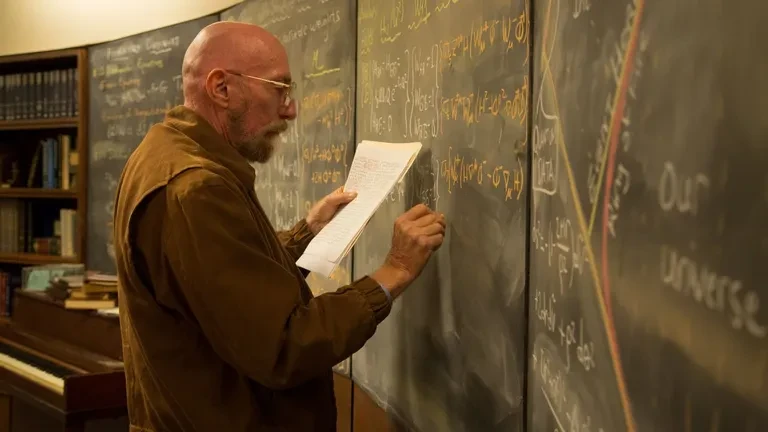
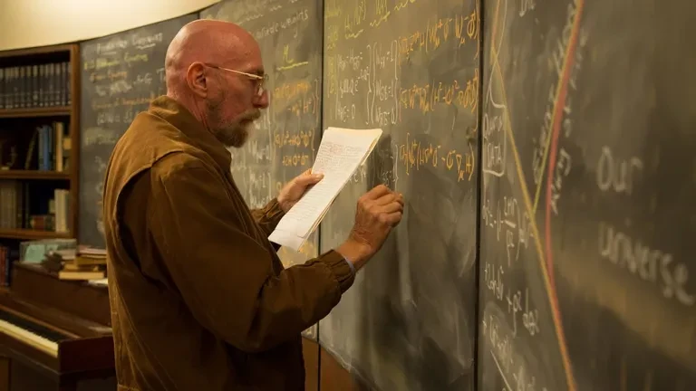

INTERESTELAR


En medio de esta situación, Cooper, un ex piloto de la NASA convertido en agricultor, lucha por proteger
a su familia.
En el medio del caos ve cómo las oportunidades en la Tierra se desvanecen. Tras un descubrimiento inesperado, Cooper se une a
una misión espacial secreta organizada por lo que queda de la NASA. Su objetivo: atravesar un agujero de
gusano recientemente formado cerca de Saturno, que podría conducir a otros sistemas solares con planetas
potencialmente habitables.
A bordo de la nave Endurance, Cooper viaja junto a un equipo de científicos entre ellos la doctora
Amelia Brand, para explorar una serie de planetas que podrían albergar vida humana.
 

Sin embargo, el viaje no solo representa un desafío físico, sino también emocional: la relatividad del
tiempo, las enormes distancias y la incertidumbre del éxito pesan sobre cada decisión.
La película explora temas profundos como el amor, el sacrificio, la lealtad y la lucha por la
supervivencia, todo enmarcado en un relato que combina rigor científico y dramatismo emocional. El
vínculo entre padres e hijos, las decisiones personales que impactan el destino colectivo y la
perseverancia ante lo desconocido son ejes centrales de la trama.
Con efectos visuales impresionantes, una banda sonora emotiva compuesta por Hans Zimmer y un fuerte
sustento científico aportado por el físico Kip Thorne, Interestelar ofrece una experiencia
cinematográfica que va más allá del entretenimiento: invita a reflexionar sobre el futuro de la
humanidad, el poder del amor y los misterios del universo.